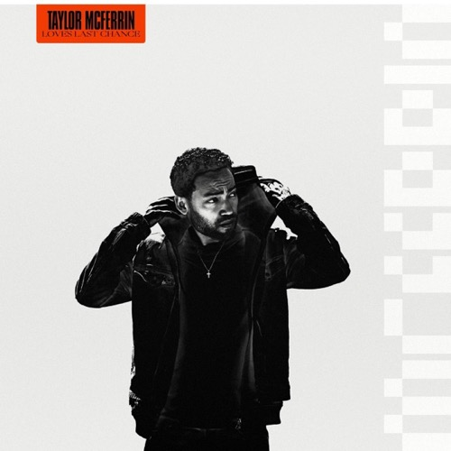
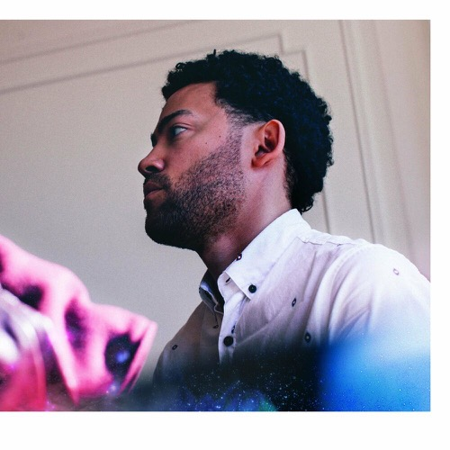

Discography
Selected albums as leader

Love's Last Chance
2019 Brainfeeder
Early Riser
2014 Brainfeeder
Watching Taylor McFerrin perform live is like witnessing a one-person argument against genre itself. The Brooklyn-based multi-instrumentalist layers Rhodes chords, beatboxed rhythms, sampled textures, and MPC-triggered drums in real time, constructing entire sonic worlds from nothing but his hands and his voice. It is a feat of musical architecture that feels less like a concert and more like controlled spontaneous combustion.
The son of vocal legend Bobby McFerrin, Taylor grew up immersed in music but carved a path entirely his own. Rather than following his father into the acoustic vocal tradition, he gravitated toward electronic production, hip-hop, and the outer edges of jazz improvisation — a combination that caught the ear of Flying Lotus, who signed him to the influential Brainfeeder label.
His debut album Early Riser arrived in 2014 as a warm, beatific statement of purpose, weaving ambient electronics with jazzy keys and soulful vocals. The follow-up, Love's Last Chance, pushed further into live instrumentation and collaborative energy, featuring contributions from Robert Glasper, Thundercat, Hiatus Kaiyote, and BADBADNOTGOOD, among others.
McFerrin has performed at major festivals worldwide, earning a reputation as one of the most captivating live acts in experimental music. His work occupies a rare space where electronic precision meets improvisational freedom — proof that when you refuse to choose between the machine and the human, something genuinely new emerges.
Selected albums as leader